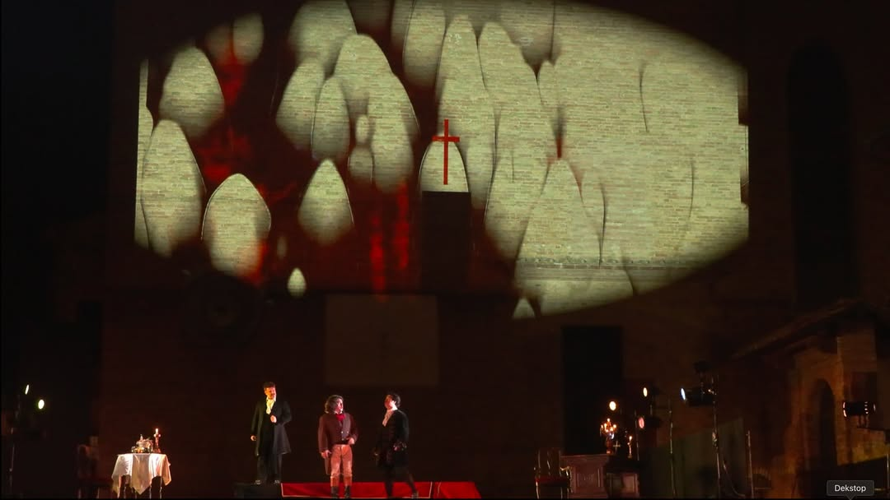
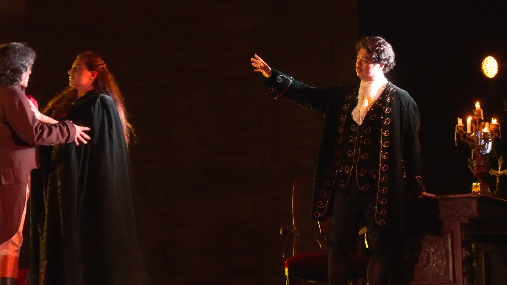
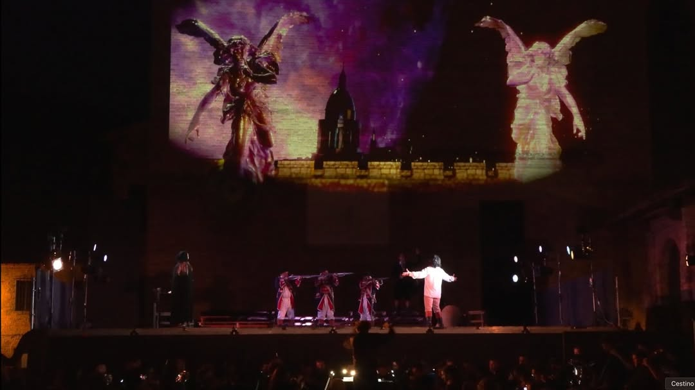
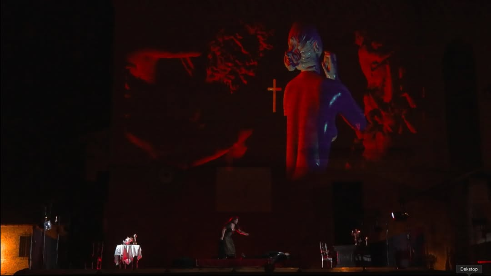

Tosca Classica
Galleria





Video
Note
Per la 90a edizione del Festival dell'Opera di San Gimignano, Boris Pimenov ha progettato e realizzato la scenografia virtuale per l'opera Tosca di Giacomo Puccini. L'intervento ridisegna lo spazio scenico attraverso ambienti digitali generati in tempo reale con TouchDesigner, che avvolgono il palcoscenico storico con architetture luminose, texture pittoriche e proiezioni volumetriche.
Il progetto affronta la sfida di far coesistere la tradizione lirica con il linguaggio dell'immagine interattiva: ogni atto possiede una palette visiva distinta, capace di amplificare la drammaturgia pucciniana senza sovrastarla. La scenografia virtuale dialoga con le scene fisiche creando un doppio registro - reale e digitale - che espande la percezione dello spazio e del tempo narrativo dell'opera.